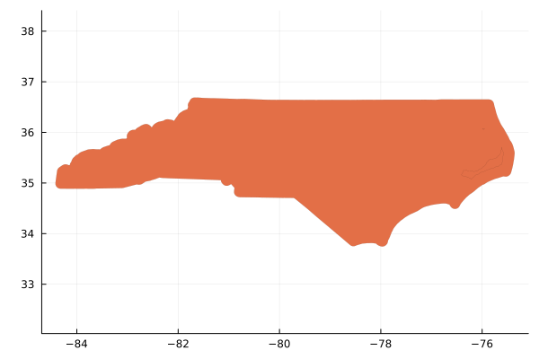

Tutorial
This tutorial will guide you through the process of finding and running a QGIS algorithm on geospatial data in Julia. What we'll do:
- Read in some GeoJSON data using GeoJSON.
- Find an algorithm for adding a buffer around the boundaries of the data.
- Run the algorithm on the data.
- Visualize the results.
Step 1: Load Required Packages
- GeoJSON: for reading in GeoJSON data.
- QGIS: for finding and running algorithms.
- Plots: for visualizing the data.
- GeoInterfaceRecipes: for providing plot recipes for the GeoJSON data.
julia> using GeoJSON, QGIS, Plots, GeoInterfaceRecipes
Step 2: Read in GeoJSON data
The test/ directory of QGIS contains a GeoJSON file named nc.geojson (the state boundaries of North Carolina).
julia> path = joinpath(dirname(pathof(QGIS)), "..", "test", "nc.geojson");julia> nc = GeoJSON.read(path)Feature with 2D MultiPolygon geometry and 12 properties: (:geometry, :statehood, :group, :city, :landarea, :houseseats, :population, :waterarea, :capital, :name, :abbreviation, :area)julia> plot(nc.geometry; aspect_ratio=:equal, linewidth=0);GKS: cannot open display - headless operation mode active
Step 3: Find a Buffer Algorithm
QGIS has an (unexported) df::DataFrame that holds all the metadata on the QGIS algorithms.
julia> QGIS.df261×11 DataFrame Row │ provider algorithm can_cancel deprecated gro ⋯ │ Symbol Symbol Bool Bool Str ⋯ ─────┼────────────────────────────────────────────────────────────────────────── 1 │ 3d 3d:tessellate true false Vec ⋯ 2 │ native native:addautoincrementalfield true false Vec 3 │ native native:addfieldtoattributestable true false Vec 4 │ native native:adduniquevalueindexfield true false Vec 5 │ native native:addxyfields true false Vec ⋯ 6 │ native native:affinetransform true false Vec 7 │ native native:aggregate true false Vec 8 │ native native:alignrasters true true Ras ⋮ │ ⋮ ⋮ ⋮ ⋮ ⋱ 255 │ native native:voronoipolygons true false Vec ⋯ 256 │ native native:wedgebuffers true false Vec 257 │ native native:writevectortiles_mbtiles true false Vec 258 │ native native:writevectortiles_xyz true false Vec 259 │ native native:zonalhistogram true false Ras ⋯ 260 │ native native:zonalstatistics true true Ras 261 │ native native:zonalstatisticsfb true false Ras 7 columns and 246 rows omitted
- We can search for algorithms that contain the word "buffer" in their name.
julia> filter(x -> occursin("buffer", string(x.algorithm)), QGIS.df)6×11 DataFrame Row │ provider algorithm can_cancel deprecated group ⋯ │ Symbol Symbol Bool Bool Strin ⋯ ─────┼────────────────────────────────────────────────────────────────────────── 1 │ native native:buffer true false Vecto ⋯ 2 │ native native:bufferbym true false Vecto 3 │ native native:multiringconstantbuffer true false Vecto 4 │ native native:singlesidedbuffer true false Vecto 5 │ native native:taperedbuffer true false Vecto ⋯ 6 │ native native:wedgebuffers true false Vecto 7 columns omitted
Step 4: Run the Buffer Algorithm
- The
QGIS.Algorithmholds the help, metadata, and parameters for a QGIS algorithm. - The constructor takes the algorithm name and parameters as keyword arguments.
- Parameters and their assigned values are displayed in the
Base.showmethod.
julia> alg = QGIS.Algorithm("native:buffer", DISTANCE=0.1)QGIS.Algorithm - native:buffer • SEGMENTS = 5 • DISSOLVE = false • END_CAP_STYLE = 0 • INPUT = nothing • OUTPUT = nothing • JOIN_STYLE = 0 • DISTANCE = 0.1 • MITER_LIMIT = 2 • SEPARATE_DISJOINT = false
QGIS.Algorithms are callable and accepts optional input/output arguments to override theINPUTandOUTPUTparameters. Note that these arguments refer to file paths.
julia> output = alg(GeoJSON.write(tempname() * ".geojson", nc))"/tmp/jl_tgTIPSzCTs.geojson"julia> nc_buffered = GeoJSON.read(output)FeatureCollection with 1 Featuresjulia> plot(nc_buffered.geometry; aspect_ratio=:equal, linewidth=0, color=2);

Step 5: Visualize the Results
julia> plot(nc_buffered.geometry; aspect_ratio=:equal, linewidth=0, label="Buffered", color=2);julia> plot!(nc.geometry; aspect_ratio=:equal, linewidth=0, label="Original", color=1);